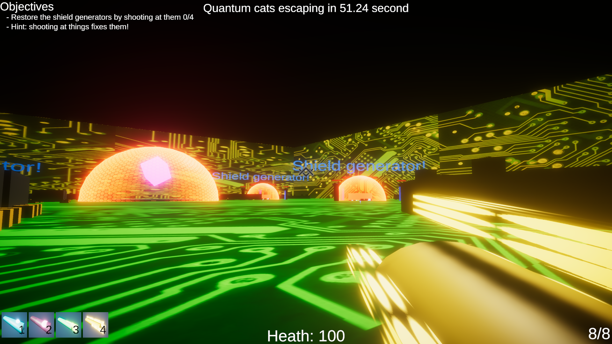

Game / Ludum Dare 48
The Quantum Menace
A game-jam project created for the 48th Ludum Dare.

Preserved releases
The source archive contains two browser exports, itch packages and a Windows ZIP. This site preserves the primary Web build for direct play; the duplicate jam build and packaged downloads remain documented in the content inventory.